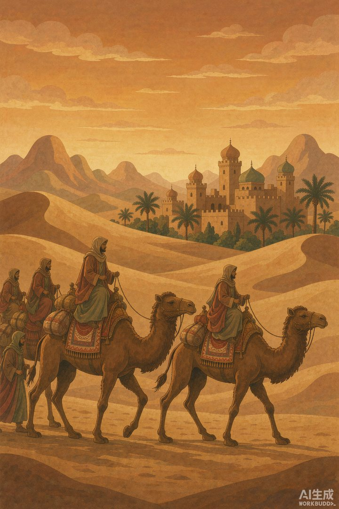
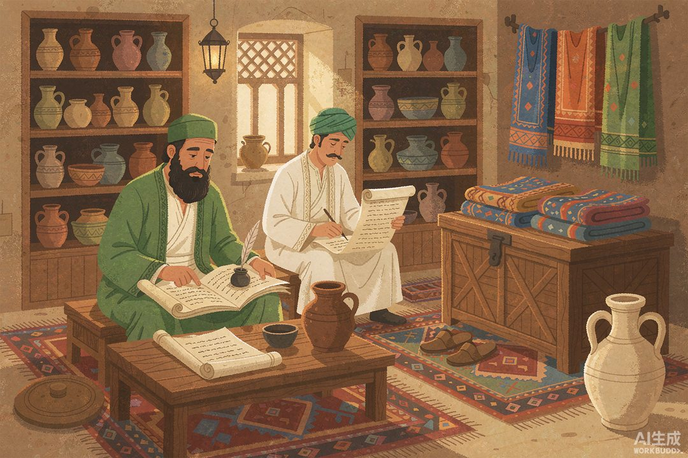
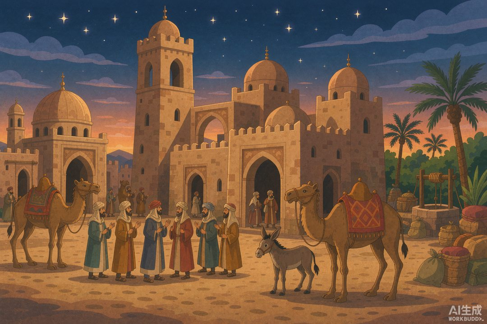

|
信息传播那些事儿 · 卷二 竹简与封泥 · 第 24 篇 |
|
丝路信使 —— 一支商队，就是中世纪最忙的「快递 + 情报网」 |

▲ 丝绸之路上的商队，既是运货的，也是传话的（AI 生成示意图）
|
罗马人每天挤在广场，盯着石头上的公报看天下；可那石头上的消息，出不了罗马城。就在同一个千年，另一群人正赶着骆驼，把消息连同丝绸、香料一起，搬过整片欧亚大陆。他们不拿官饷，却比任何邮差都跑得远。 |
上一篇我们说到，罗马人用刻在石头上的《每日纪闻》看「官方头条」，可那消息只在罗马城里转。你想过没有——当长安的皇帝换了人、撒马尔罕的集市涨了价、君士坦丁堡打起了仗，这些隔着几千公里的事，是谁、又是怎么传到另一头去的？
答案有点反常识：不是邮差，是商队。
一 | 商队不是邮差，是「会走路的微信群」 |
公元 3 到 8 世纪，丝绸之路上的生意，基本被一群叫「粟特人」的中亚商人垄断了。他们老家在撒马尔罕一带，却沿着商道一路扎下根：凉州、敦煌、高昌、长安、洛阳……每个落脚点既是个小市场，也是个「信息中转站」。
最硬的证据，是敦煌长城脚下挖出的几封「粟特文古信札」——年代在公元 312 年前后，8 封信塞在一个邮袋里，埋在沙里千年。信是一个以凉州为大本营的商队首领，写给家乡撒马尔罕出资人的：汇报派往邺城、洛阳、兰州、酒泉、敦煌的各路商人干得怎么样，路上碰到了什么战乱。你看，这不就是一份「出差周报」加「行情简报」？
一个商队从撒马尔罕出发，跑到长安卖完货，回程时顺手就把东方的新鲜事捎回西域，再把西域的传闻带给中原。消息像滚雪球，一站交一站。今天我们说「建个群同步一下」，那时候他们靠的是「组个商队同步一下」。

▲ 商队首领在驿站灯下写家书与行情信（AI 生成示意图）
二 | 驿站是官家的，消息却是私人的 |
官方当然也有「快递网」。拿唐朝说，《唐六典》记着天宝年间全国设驿一千六百三十九所，大致「三十里一驿」，专门跑公文和军情，最快一天能驰五百里——安禄山在范阳起兵，离长安三千里，六天皇帝就知道了。
可这套网是给官府用的。民间老百姓想寄封信？不好意思，用不了。中国「官办民享」的普通邮政，要等到 1896 年才开办。也就是说，在之前的一千多年里，普通人的家书、商人的行情、旅人的口信，几乎全靠熟人、靠商队、靠顺路的人捎。
这就出现了两条并行的「信息网」：一条是官驿，由国家掌控，只传它想传的；一条是商队，自由、松散、却哪儿都能钻。后者，才是老百姓真正的信息生命线。

▲ 绿洲商栈旁的寺院，是商人们交换情报的所在（AI 生成示意图）
三 | 寺院是古代的「情报交易所」 |
粟特人更绝的是，他们在每个贸易站旁都修一座祆祠或佛寺。你以为是烧香的地方？错，那是古代版的「情报交易所」兼「信用社」。
商人借着宗教集会把各路行情凑到一起：「听说于阗那边中原茶叶涨价了，得提前备货」「波斯银币最近紧，结算换金子吧」。祆祠不光管信仰，还管聚落里的纠纷、甚至放贷款（当时的「当铺」月息大约五分）。一个商队到了站，先去寺院跟同行碰个头，比今天刷半小时行业群掌握的还多。
一条商道，串起的不只是货，更是一个个「信息枢纽」。谁坐在枢纽中间，谁就比别人早半天知道行情、早半步避开风险。
四 | 一个人，把半个东方讲给了西方 |
商队一代代跑，把零散的消息搬来搬去。可有个人，硬是把整片亚洲「打包」送到了西欧——马可·波罗。1271 年他跟着父亲从威尼斯出发，1275 年抵达元朝大都，一待就是约十七年，1295 年才回威尼斯；后来在牢里口述出一本《马可波罗行纪》。
这本书在此后几百年里，几乎是欧洲人了解东方的「头号新闻源」。一个没当过一天信使的人，却用一本游记，当了一回横跨大陆的「超级信使」——把契丹的繁华、印度的香料、波斯的织毯，一次性「推送」给了整个西方世界。
你看，从粟特商队到马可·波罗，道理从来没变：贸易路线走到哪儿，信息就流到哪儿；谁攥住了商道，谁就攥住了消息。
|
数字锚点 · 商队与商道 | |||||||
|
|
🔔 下篇预告 · 第 25 篇《魏晋清谈》—— 商队再能跑，搬的终究是货，顶多顺手捎句话。有一群人，连货都不搬，光凭一张嘴「聊」，就搅动了半个中国的风气。 |
史料转引自《唐六典》、敦煌出土粟特文古信札相关研究（中国社会科学网）、人民网《丝绸之路》背景资料、丝路遗产网粟特商人研究；配图为 AI 生成示意图。